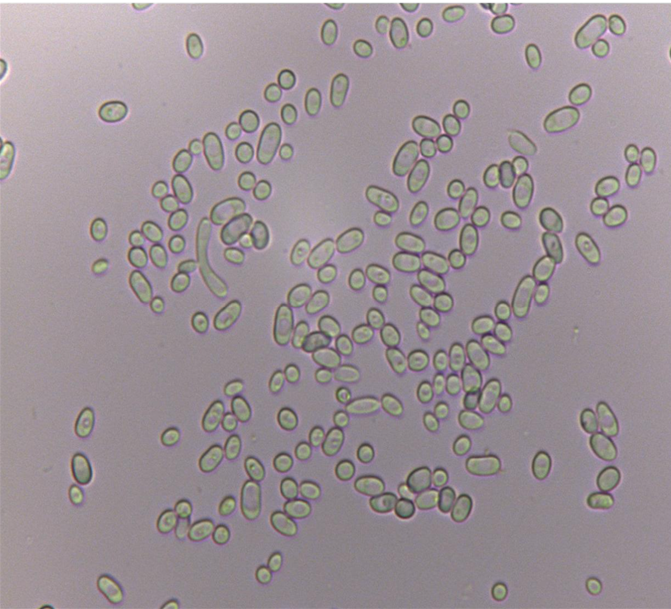
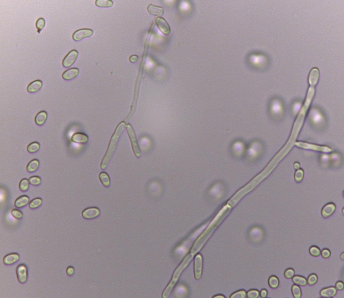
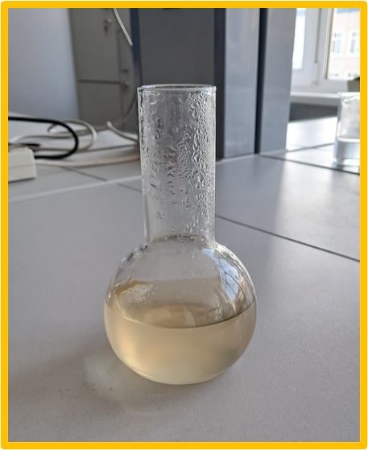
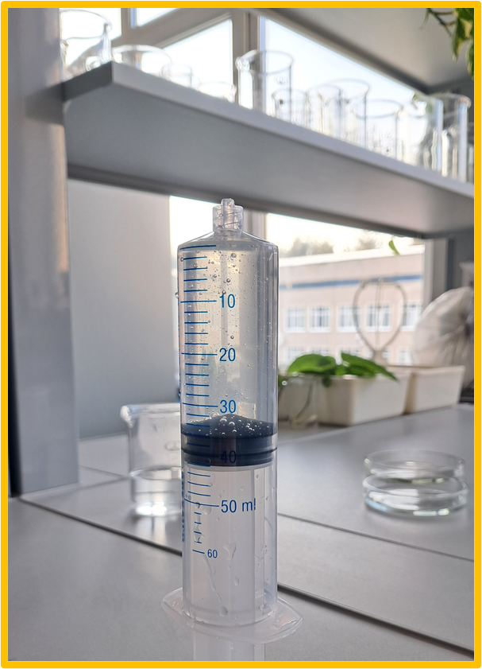
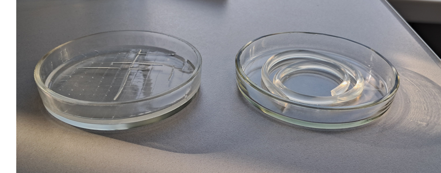
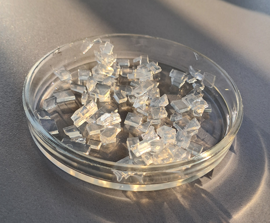
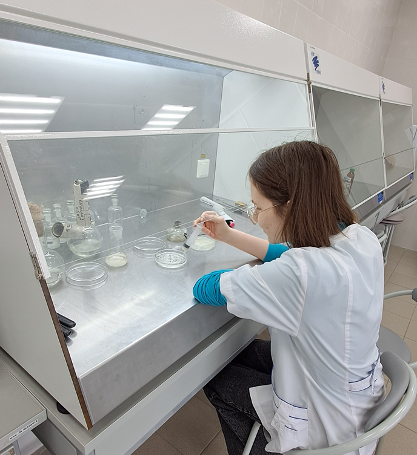
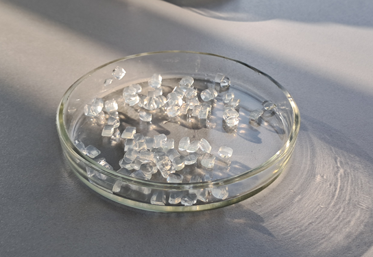
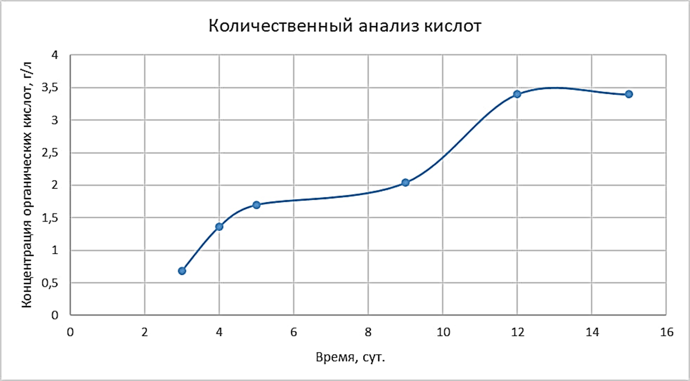

- Микроскопирование
- Культура может расти в виде дрожжеподобных клеток (дрожжевая фаза), а также образовывать гифы.
  - Создание гранул различной формы из агарового и альгинатного гелей
- Попробовали несколько концентраций для формирование упругой формы гранул. Для агар-агара и альгината натрия брали концентрацию 15 г/л.
  - Гранулы из агар-агара
- Раствор агар-агара разлили в чашку Петри, дали застыть при комнатной температуре и с помощью скальпеля разрезали на равные части.
- Также раствор агар-агара с помощью шприца налили в трубку со внутренним диаметром 0,5 см, дали застыть в стакане с холодной водой в вертикальном положении. С помощью того же шприца воздухом выгнали застывший агар и порезали его на равные части скальпелем.  - Провели иммобилизацию дрожжевой суспензии в агаровый гель. Культуральную жидкость смешивали с раствором агара в соотношении 1:1, разливали в чашки Петри и нарезали на равные части скальпелем.
  - С помощью титрования определили массовую концентрацию органических кислот в пересчете на моногидрат лимонной кислоты в фильтрате культуральной жидкости иммобилизованных клеток.
- Построили график изменения концентрации кислот во времени. Максимальная концентрация составила 3,4 г/л.

Предыдущая страница